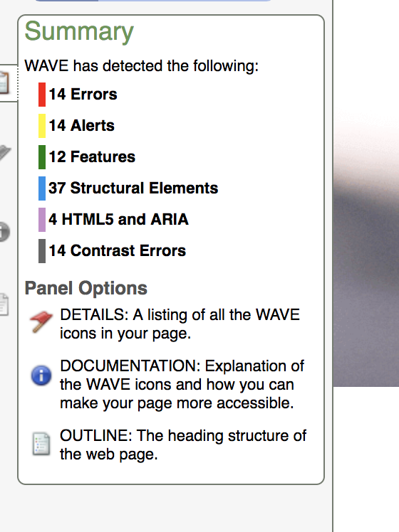
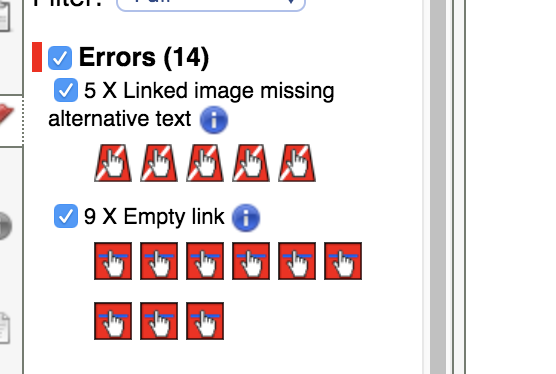
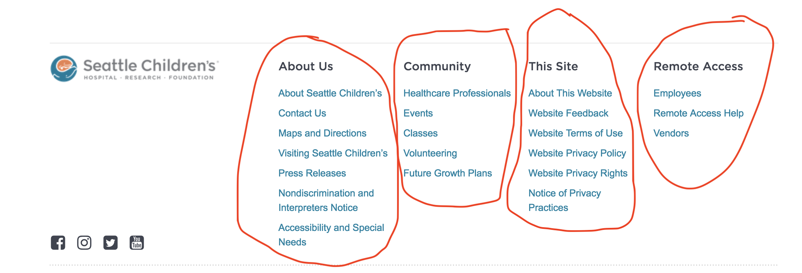

This week I choose to evaluate Seattle Children’s site for accessibility. To fairly and accurately evaluate for accessibility, I decided to perform my analysis using the Principles of Accessibility as defined by Web Content Accessibility Guidelines 2.0 (WCAG 2.0) which lay the foundation necessary for anyone to access and use Web content.

After I perform my analysis using the WCAG 2.0 guidelines, I will test the website using WAVE (Web Accessibility Evaluation Tool) and compare my analysis to the WAVE report/summary. For this analysis – I also narrowed down my “manual” analysis to only the first principle in WCAG 2.0 – Perceivable.
WCAG 2.0 Reference- Perceivable – information and user interface components must be presentable to users in ways they can perceive.
It is understood that if any of these guidelines are false, then the users with disabilities will not use the Website. I used Google Chrome DevTools to perform my analysis.
The first guideline Perceivable has four sections that I will highlight at a cursory level.
1.1 - Text Alternatives
I was able to see that all links in the navbar had href links a title that named what the link was.
1.2 - Time-Based Media
The homepage had no audio or video media therefore does not apply.
1.3 - Adaptable
The homepage uses ARIA landmarks to identify regions on the page while ordering the content in a seemingly meaningful sequence. The homepage uses text to communicate understanding and operating content that does not rely on solely on sensory characteristics.
1.4 - Distinguishable
The homepage attempts to make it easier for users to see and hear content including separating the foreground from the background.
- Use of color – color is not used to convey information.
- Audio control – there is no audio output on the main page.
- Contrast – there is some use of contrast on the homepage and the WAVE report indicated 14 contrast errors.
- Resize text – text is only resized dependent on the heading levels on the main page e.g. h1, h2, h3, and h4.
- Text Spacing – line height, spacing following paragraphs/sections, letter spacing and word spacing appear to follow WCAG 2.0 guidelines.
WAVE Report
At this point to verify my own analysis and identify anything that was missed. I submitted the Seattle Children's homepage URL through the WAVE Web Accessibility Tool for throughness.
 WAVE Summary ReportErrors
 Summary of Errors
There were five instances where a linked image was missing the descriptive alternative text. This is a significant issue since a screen reader has no content to present to the user regarding the function of the link.
How to fix: add the appropriate alternative text that presents the content of the image or function of the link.
Lastly there were 9 instances where a link contained no text. This is another significant issue since when a link contains no text, the function or purpose of the link cannot be presented to the user and will result in confusion to users who use a screen reader or keyboard.
How to fix: simply remove the empty link or provide text within the link.
Missing Links (Errors) in Body Section
Missing Links (Errors) in Footer
Alerts
One instance where WAVE detected ‘Suspicious alternative text’ indicating the alt text is likely insufficient or contains extraneous information.
How to fix: the alt text is used to indicate a Google Map image is used nearby and I hypothesize that is appropriate for screen readers since Google Maps are difficult to see clearly even for readers who are not visually impaired.
An area that does bring forth concern is three instances where there are adjacent links directing to the same URL. This is seen in the following image where the link in the image and in the title for the section direct the visitor to the same page.
How to fix: combine the links or remove the redundant text or alt text so the web developer can use alt=”” in the image.
Features
There was one instance where an alternative text was null or an empty (alt= “”). This matters for when an image doesn’t convey or the content of the image is conveyed elsewhere then the image should have an empty/null alternative text (alt=””) to ensure it’s ignored by a screen reader.
How to fix: The image does not convey content since the content of the image is conveyed in nearby text: Featured Social Media right above the h1 element Follow Seattle Children’s on Instagram.
Structural Elements
 Summary of Structural Elements
Summary of Structural Elements
Three first level heading h1 elements are present, headings facilitate page navigation for users of assistive technologies. Typically h1 elements should contain the most important headings on the page such as document title.
How to fix: Validating the text in question is truly a heading which on this page the h1 elements are:
- Welcome to Seattle Children’s div that is titled as “main-content” indicating that the web development team sees this div as the most important element on the page.
- There are two feature stories in the homepage-section div that are also coded as h1 elements: Erin Advocates for T-Cell Immunotherapy and Follow Seattle Children’s’ on Instagram.
How to fix: I don’t see a need to fix this as the web development team will be directed to indicate which sections are higher priority over others.
There are multiple instances of the Seattle Children’s homepage using h2, h3 and h4 headings on the homepage that appear to be used properly.
Lastly there are 18 instances of using ordered lists on the main page that can help users of assistive technologies navigate within the lists on the page.
 Unordered Lists in footer
HTML5 and ARIA
A header element or banner landmark is present identifying page introduction or navigation. Typically, around the site or page name, logo, top navigation or other header content. How to fix: This element does not need to be fixed since it is used properly on this webpage. nav element or navigation landmark is present which identifies a section of navigation links and can facilitate page semantics and navigation.
How to fix: This element does not need to. Be fixed since it is being used properly on this webpage.
footer element or content info is present identifying a footer for the page and typically identifies authorship, related links, copyright date, etc.
How to fix: This element does not need to. Be fixed since it is being used properly on this webpage.
An ARIA role, state or property is present. ARIA provides enhanced semantics and accessibility for web content.
Recommendations
Correcting the 14 errors examined at the beginning of the WAVE report section is the first priority for improving accessibility for the webpage.
- Add all appropriate alternative text that presents the content of the image or function of the links that were detected in the WAVE report.
- Remove any empty links or provide proper text within the links.
This should ensure that anyone visiting this webpage using a screen reader will not encounter any difficulties.